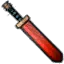

涂鬼神
以砚为鞘，可以研春秋；
以笔为剑，可以涂鬼神。
- 涂鬼神是一种模组专属通用武器。
-
攻击力68，攻击距离6
说明-武器特性：
【玄墨】：攻击时消耗2.5墨染值（不足则消耗1.25生命值）。
【工笔入画】：每5秒充能下一次攻击（最多充能3次），使下次攻击的溅射范围扩大并造成攻击力250%的真实伤害；
【工笔入画（主动）】：技能轮盘释放，消耗50墨染值（不足无法使用），立刻在自己脚下召唤一个“小自在”。
（小自在：生命值100，每秒恢复1生命值，减伤60%，受到月亮阵营伤害-30%，对月亮阵营伤害+30%，受到BOSS生物伤害减少50%，移动速度9，攻击力34，攻击间隔1.3s。）
【泼墨淋漓（主动）】：（精英化阶段1解锁）技能轮盘释放，消耗100墨染值（不足无法使用）向鼠标位置持续喷洒水墨，期间获得霸体且受到的伤害降低34%（乘算），对扇形范围内的非友方单位每秒造成100+0.075%目标最大生命值的真实伤害，若目标生命值低于其最大生命值的50%，则伤害额外+30%；持续5秒，冷却21秒。
【写意胜形（主动）】：（精英化阶段2解锁）技能轮盘释放，攻击间隔进一步增大（+1s），攻击力+30%，攻击范围扩大至64，视野范围扩大，攻击溅射范围扩大，【玄墨】消耗的墨染值或生命值翻倍；攻击时恢复溅射范围内所有“小自在”全部生命值并刷新其存在时间，若溅射范围内的“小自在”数量不大于5，则在目标点召唤一个“小自在”。
【墨影瞬】：右键地面或一个可被攻击的单位触发，消耗10墨染值，立刻瞬移至目标单位身后/目标位置并对周围6范围的单位造成等于武器攻击力的真实伤害。
涂鬼神

分类：装备/手部
解锁方式：初始解锁
制作材料：
①栅栏击剑*1
②金块*40
③噩梦燃料*40